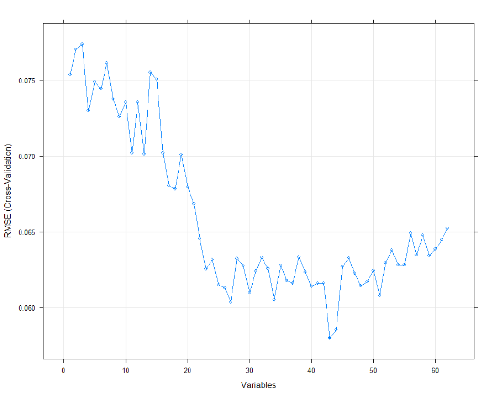

We notice that we have a missing data on the table and we need to know the relation
between the output (readmission) and other features ,so first of all we must do preprocessing for our data and EDA.
We follow preprocessing steps to improve our predictive model.
These steps are:
1.preprocessing:
1.1.Data Imputation:
here we should replace our missing Data by a good and appropriate one. By exploring some data, we can see there are some identification columns, some numerical columns, and some categorical columns. Also, there is some missing data that are represented with a question mark (?).
1.2.Feature selection:
here for the first sight you might think that all the data is important but here comes the glory of machine learning, by filter, drop methods and much more we can find that some features is only over fitting model and not giving us much information.
The most important column here is readmitted, which tells us if a patient was hospitalized within 30 days, greater than 30 days or not readmitted. The features are not important such as encounter_id, patient_nbr, admission_type_id, discharge_disposition_id and admission_source_id in addition features whose have more than 50% missing such as weight,medical_specialty and payer_code data which are determined through R code shown.
1.2.3.Dummy:
by looking at data, you could see they are of very different types , We will break down them into numerical features, categorical features and extra features
1.2.3.1.Numerical features:
These features do not need any modification.
1.2.3.2. Categorical features:
These are non-numeric data such as race, gender and etc . To convert them to variables, we use dummy function. But there is a problem that we create a column for each unique value. In other words, the value in one column can be figured out by looking at the rest of the columns. We solve it by using a drop function for the first column
1.2.4.Feature normalization:
by looking at data, you could see they are of very different ranges. This for sure affects our model and makes it so slow. We could map our data through certain function we implement
2.EDA:
To be more awareness of our data and facilitate our understanding of the data: we will not be able to estimate anything from inspecting a table full of numbers, we use exploration data analysis (EDA). EDA is how to visualize your data
In our project, we use GG plot as it is the powerful tool of EDA.

this plot show the feature's effect on RMSE to identify which feature can we drop
Build & Train Model:
It is now time for us to split our data. The idea behind splitting the data is so that we can measure how well your model would do on unseen data.
We spilt our data using K-fold cross validation method as This method enable us to use all data in train and test so we can improve our model performance.
The principle of K-fold cross validation method is
1. split our original data into K samples
2.one of these samples is held out and iterate to the rest
3. the sample which is held out is used to make decisions on how to improve the model ( for test) and the rest is used to train
4. hold out the next one and iterate to the rest and so on till iterating on k samples
Evaluation
The problem that can come to your mind after seeing features,how this person can do all these lab's analysis every time during the 30 days period.here come the solution,by seeing accuracy variance with all attributes and knowing the effect of each attribute in test , we will be able to do all test just once and next time we will do the high accuracy test only.see figure for more illustration of parameters relation with accuracy.